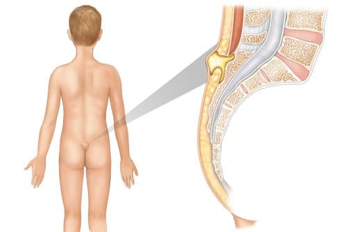

Если вы заметили маленькую «дырочку» у основания позвоночника малыша — это и есть «эпителиальный копчиковый ход», или «пилонидальный синус». Так как две части позвонков внутриутробно растут навстречу друг другу, на коже, покрывающей их, в месте срастания могут оставаться следы. Иногда в складке кожи остается отверстие, называемое «ходом», или «синусом». Врач может указать вам на него при осмотре ребенка.
ЧТО ДЕЛАТЬ
Большинство этих ходов — безопасный след эмбрионального роста и не требует лечения, однако некоторые могут проходить глубоко в кожу и образовывать сообщение со спинномозговым каналом. В медицине это известно под названием «связующей хорды», что подразумевает связь между позвоночником и кожей. Связующую хорду надо удалять хирургическим путем, чтобы она не мешала развитию позвоночника. Для безвредных впадин, которые не нуждаются в лечении, характерно:
Пилонидальные синусы, которые могут нуждаться в хирургической коррекции, имеют следующие признаки:
Если вы не знаете, насколько глубоко простирается ход, ваш врач может назначить УЗИ или МРТ нижних позвонков, чтобы определить, сообщается ли ход со спинным мозгом и требуется ли лечение. Синус, который начинается высоко возле позвоночника и имеет видимый ход вдоль него, может быть лишь вершиной айсберга, означающей наличие различных дефектов позвонков, например, спина бифида (расщелина позвонка). МРТ выявит это.
Здоровье ребенка от докторов Сирс / Сирс У. и др.